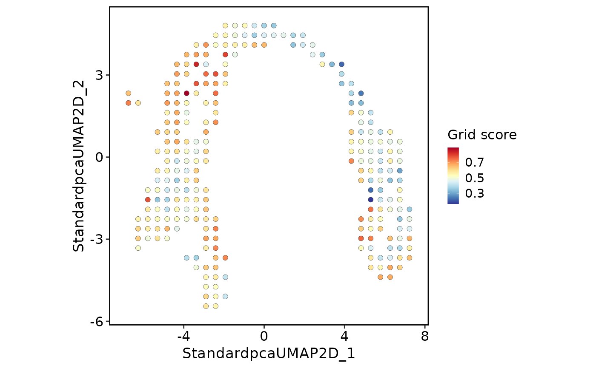
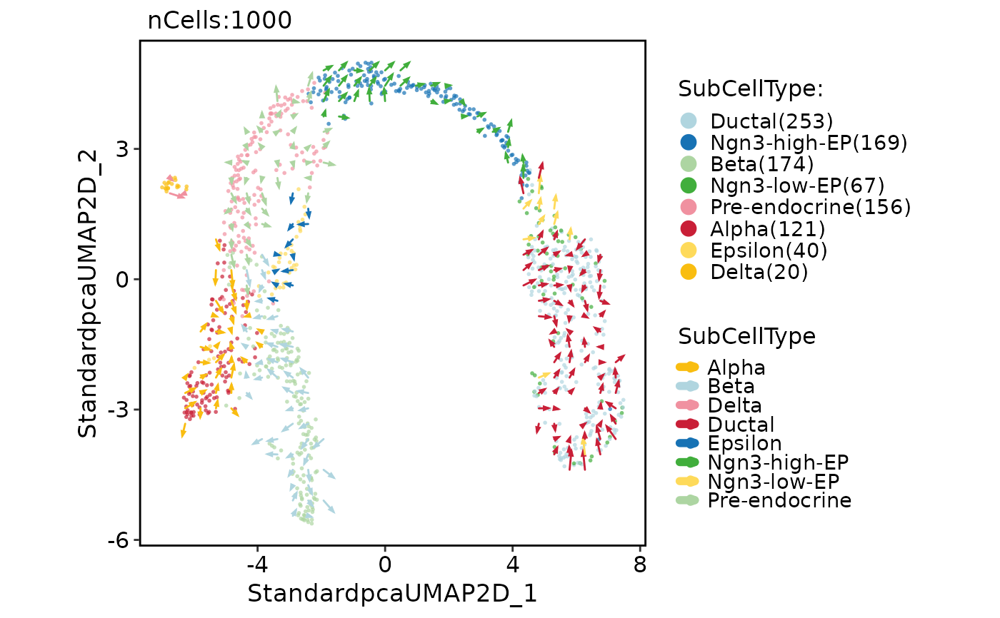

Visualize VECTOR grid-level scores or direction arrows on the embedding used
by RunVECTOR().
Usage
VECTORPlot(
object,
plot_type = c("grid", "raw"),
tool_name = "VECTOR",
score.name = "VECTOR_Score",
group.by = NULL,
background = c("auto", "score", "group", "none"),
point.size = NULL,
point.alpha = 0.7,
grid.size = 2,
arrow.linewidth = 0.5,
arrow.length = grid::unit(0.035, "inches"),
arrow.angle = 20,
arrow.color = "grey20",
title = NULL,
subtitle = NULL,
xlab = NULL,
ylab = NULL,
aspect.ratio = 1,
legend.position = "right",
legend.direction = "vertical",
theme_use = "theme_scop",
theme_args = list(),
...
)Arguments
- object
A
Seuratobject processed byRunVECTOR().- plot_type
Plot type.
"grid"colors occupied grid centers by grid score, and"raw"draws VelocityPlot-style grid arrows.- tool_name
Name used in
srt@tools.- score.name
Metadata column containing VECTOR scores.
- group.by
Optional metadata column used as the background cell color for direction-field plots.
- background
Background for plots.
"score"usesFeatureDimPlot(),"group"usesCellDimPlot()and requiresgroup.by, and"none"draws the flow field without cell points.- point.size
Cell point size. If
NULL, uses the same default asFeatureDimPlot().- point.alpha
Cell point alpha.
- grid.size
Grid-center point size.
- arrow.linewidth
Direction arrow line width.
- arrow.length
Arrow head length passed to
grid::arrow().- arrow.angle
Arrow head angle passed to
grid::arrow().- arrow.color
Direction arrow color.
- title, subtitle, xlab, ylab
Plot labels. By default no title is shown.
- aspect.ratio
Fixed aspect ratio.
- legend.position, legend.direction
Legend position and direction.
- theme_use, theme_args
Theme function and arguments.
- ...
Additional arguments passed to
FeatureDimPlot()orCellDimPlot()when a cell background is requested.
Examples
data(pancreas_sub)
pancreas_sub <- RunStandardWorkflow(pancreas_sub)
#> ℹ [2026-08-17 15:08:18] Start standard processing workflow...
#> ℹ [2026-08-17 15:08:18] Checking a list of <Seurat>...
#> ! [2026-08-17 15:08:18] Data 1/1 of the `srt_list` is "unknown"
#> Warning: Data 1/1 of the `srt_list` is "unknown"
#> ℹ [2026-08-17 15:08:18] Perform `NormalizeData()` with `normalization.method = 'LogNormalize'` on 1/1 of `srt_list`...
#> ℹ [2026-08-17 15:08:18] Perform `FindVariableFeatures()` on 1/1 of `srt_list`...
#> ℹ [2026-08-17 15:08:18] Use the separate HVF from `srt_list`
#> ℹ [2026-08-17 15:08:18] Number of available HVF: 2000
#> ℹ [2026-08-17 15:08:18] Finished check
#> ℹ [2026-08-17 15:08:18] Perform `ScaleData()`
#> ℹ [2026-08-17 15:08:18] Perform pca linear dimension reduction
#> ℹ [2026-08-17 15:08:19] Use stored estimated dimensions 1:23 for Standardpca
#> ℹ [2026-08-17 15:08:19] Perform `Seurat::FindClusters()` with `cluster_algorithm = 'louvain'` and `cluster_resolution = 0.6`
#> ℹ [2026-08-17 15:08:19] Reorder clusters...
#> ℹ [2026-08-17 15:08:19] Skip `log1p()` because `layer = data` is not "counts"
#> ℹ [2026-08-17 15:08:19] Perform umap nonlinear dimension reduction
#> ✔ [2026-08-17 15:08:28] Standard processing workflow completed
pancreas_sub <- RunVECTOR(pancreas_sub, verbose = FALSE)
VECTORPlot(pancreas_sub, plot_type = "grid")

VECTORPlot(pancreas_sub, plot_type = "raw", group.by = "SubCellType")
